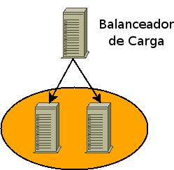

| GNU/Linux, software libre para la comunidad universitaria: Clustering y alta disponibilidad en GNU/Linux | ||
|---|---|---|
| Anterior | Siguiente | |
Se puede definir el balanceo de carga como la habilidad que tiene un servicio para repartir el trabajo a realizar entre varias máquinas.

Arquitectura básica de un cluster con balanceo de carga.
Los balancearores pueden ser tanto hardware como software.
Los balancedares hardware son máquinas con un propósito específico y solo son útiles para el balanceo de carga.
Potencia.
Estabilidad.
Escalabilidad.
Precio (equipo, mantenimiento, técnicos).
Sólo sirve para balanceo.